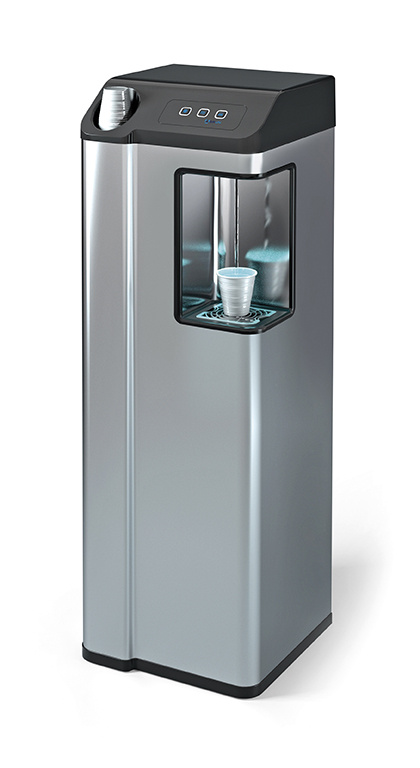
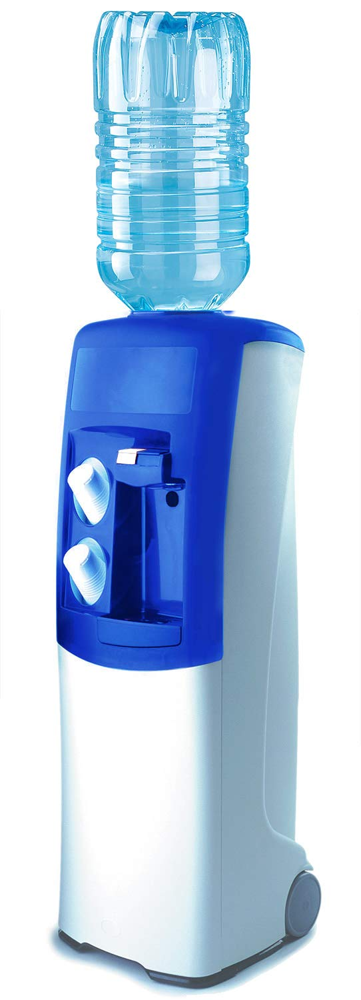
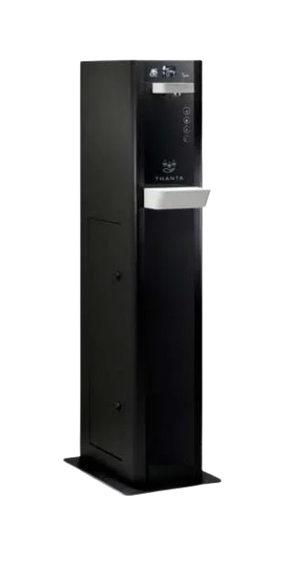
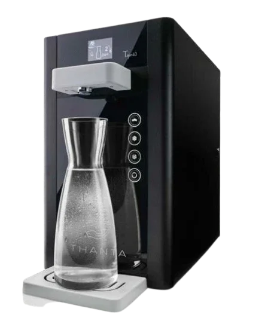
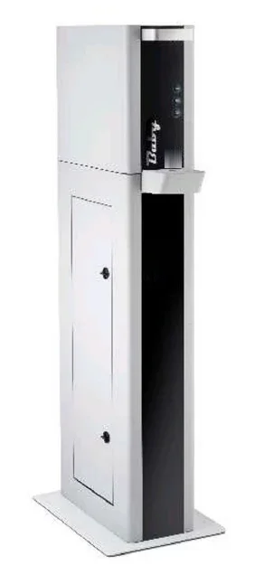

In breve
I distributori acqua per ufficio sono di tre tipi: a boccioni, senza allaccio idraulico, per uffici fino a circa 15 persone; a rete idrica, collegati all'impianto dell'ufficio, che erogano acqua filtrata in continuo per uffici fino a 30-40 persone; totem ad alta portata, con acqua naturale, fredda e frizzante, per uffici grandi, mense e HoReCa. Green Water Italia li fornisce con installazione, manutenzione e sanificazione incluse; il distributore a rete idrica si installa in tutta Italia con noleggio di 48 mesi.
Tre soluzioni
Quale distributore d'acqua per il tuo ufficio

Fino a 30-40 persone
Distributore a rete idrica
Si collega all'impianto idrico dell'ufficio e filtra l'acqua in continuo: niente boccioni da ordinare, sostituire o stoccare.
- • GREENQUALITY AC: naturale e fredda, 28 L/h
- • GREENQUALITY GAS: anche frizzante
- • Noleggio 48 mesi, installazione in tutta Italia

Fino a circa 15 persone
Distributore a boccioni
Basta una presa elettrica: nessun allaccio idraulico, si sposta facilmente. Ideale per reception, sale d'attesa e piccoli uffici.
- • Colonnina Emax: naturale e fredda, 20 L/h
- • Boccioni da 18 litri di acqua minerale naturale
- • Consegne programmate in base ai consumi

Uffici grandi e HoReCa
Totem e colonnine
Distributori a colonna ad alta portata collegati alla rete: acqua naturale, fredda e frizzante anche nei picchi della pausa pranzo.
- • Linea Thanta: fino a 80 L/h
- • T40 Totem: 40 L/h, 6 litri in continuo
- • Totem Bollicina: slim, 25 L/h
Dimensionamento
Quale distributore in base alle persone
Come riferimento si calcolano circa 2 litri d'acqua al giorno per persona.
| Persone in ufficio | Consumo stimato | Distributore consigliato |
|---|---|---|
| Fino a 15 | fino a 30 L al giorno | A boccioni, oppure a rete idrica se c'è un punto acqua |
| 15-40 | 30-80 L al giorno | A rete idrica GREENQUALITY (GAS per la frizzante) |
| Oltre 40, mense e HoReCa | oltre 80 L al giorno | Totem T40 o Linea Thanta, anche con più punti di erogazione |
Approfondisci nella guida quale depuratore per un ufficio di 10, 20 o 50 persone.
Schede tecniche
Totem e colonnine per uffici e HoReCa
Distributori a colonna collegati alla rete idrica, con acqua naturale, fredda e frizzante. Per uffici con molte persone, ristoranti, hotel e spazi collettivi.

LINEA THANTA
Business & HoReCa
- • Raffreddamento: fino a 80 L/h
- • Tecnologia Dual Cold (Igiene)
- • Erogazione in continuo: 6 Litri
- • Temperatura acqua fredda: tra 5° e 12°
- • Gas refrigerante R290
- • Raffreddamento DUAL COLD: Aria, Acqua, Combinata Aria/Acqua
- • Pompa carbonazione booster 220V
- • Dimensioni mm 360(L)×567(P)×1404(H)
- • Alimentazione 230V – 50 Hz / 330W
T40 TOTEM
Erogatore a Colonna
- • Capacità raffreddamento: 40 L/h
- • Erogazione in continuo: 6 Litri
- • Temperatura acqua fredda: tra 5° e 12°
- • Pompa carbonazione booster 220V
- • Alimentazione 230V – 50 Hz / 330W
- • Dimensioni mm 360(L)×567(P)×1404(H)
- • Raffreddamento DUAL COLD: Aria, Acqua, Combinata Aria/Acqua
- • Gas refrigerante R290

TOTEM BOLLICINA
Design Bianco Slim
- • Capacità raffreddamento: 25 L/h
- • Erogazione in continuo: 2 Litri
- • Dimensioni: 20 × 134 × 55 cm
- • Carbonatore in acciaio Inox da 1,2 L
- • Pompa booster 220 V alte prestazioni
- • Centralina di controllo funzioni elettronica
- • Alimentazione 220 V 50/60 Hz
- • Assorbimento max: 360 W
Per ristoranti e hotel leggi anche la guida alla Linea Thanta per HoReCa.
Confronto
Boccioni, rete idrica o totem?
| A boccioni | A rete idrica | Totem | |
|---|---|---|---|
| Allaccio idraulico | No, solo presa elettrica | Sì, a nostro carico | Sì |
| Ricariche | Boccioni da 18 L da sostituire | Nessuna, erogazione continua | Nessuna, erogazione continua |
| Acqua frizzante | No | Sì, versione GAS | Sì |
| Capacità di raffreddamento | 20 L/h | 28 L/h | 25-80 L/h |
| Persone indicative | fino a circa 15 | fino a 30-40 | oltre 40, HoReCa |
| Stoccaggio in ufficio | Spazio per boccioni pieni e vuoti | Nessuno | Nessuno |
Costi a confronto nella guida boccioni o osmosi inversa.
Perché in ufficio
Cosa cambia con un distributore d'acqua
Niente casse di bottiglie
Niente ordini, consegne e scorte da gestire: l'acqua è sempre disponibile.
Meno plastica
Borracce e bicchieri al posto delle bottigliette: un impegno concreto e visibile sulla sostenibilità.
Costo fisso e prevedibile
Con il noleggio paghi un canone che comprende manutenzione e cambio filtri, ed è un costo deducibile per l'azienda.
Igiene garantita
Sanificazione periodica inclusa e, per il distributore a rete idrica, analisi batteriologica su richiesta.
Dal preventivo all'acqua in ufficio
Come funziona
-
1
Consulenza e sopralluogo
Valutiamo quante persone ci sono, dove posizionare il distributore e se c'è un punto acqua vicino, e ti proponiamo la soluzione adatta.
-
2
Installazione
Installiamo il distributore e, se serve, lo colleghiamo alla rete idrica dell'ufficio, senza opere murarie.
-
3
Manutenzione inclusa
Cambio filtri, sanificazione e assistenza li gestiamo noi; per i boccioni programmiamo le consegne in base ai consumi.
Dove installiamo
Distributori acqua per uffici a Milano e in tutta Italia
Green Water Italia ha sede a Garbagnate Milanese (MI) e opera direttamente a Milano, Monza e Brianza, Varese, Como e Lecco. Il distributore a rete idrica GREENQUALITY si installa in tutta Italia, con sopralluogo, allaccio e messa in funzione a nostro carico; per le altre soluzioni organizziamo l'installazione su richiesta.
Domande frequenti
Distributori acqua per ufficio: le domande più comuni
Quale distributore d'acqua scegliere per l'ufficio?
Dipende da quante persone ci sono e se c'è un punto acqua vicino. Fino a circa 15 persone e senza allaccio idraulico va bene un distributore a boccioni. Fino a 30-40 persone conviene un distributore collegato alla rete idrica, che eroga in continuo senza ricariche. Per uffici più grandi, mense e HoReCa servono totem ad alta portata, con acqua naturale, fredda e frizzante.
Meglio un distributore a boccioni o collegato alla rete idrica?
Il distributore a boccioni non richiede allacci: basta una presa elettrica, ma i boccioni da 18 litri vanno consegnati, stoccati e sostituiti. Il distributore a rete idrica si collega all'impianto dell'ufficio ed eroga acqua filtrata in continuo, senza boccioni da gestire; oltre le 10-15 persone è quasi sempre più conveniente.
Quanta acqua serve in un ufficio?
Come riferimento si calcolano circa 2 litri al giorno per persona: un ufficio di 10 persone consuma circa 20 litri al giorno, uno di 25 persone circa 50 litri e uno di 50 persone circa 100 litri. In base a questo si sceglie la capacità di raffreddamento del distributore.
Cosa include il noleggio del distributore a rete idrica?
Il noleggio del distributore GREENQUALITY dura 48 mesi e include installazione e allaccio alla rete idrica, manutenzione senza limiti di interventi, cambio filtri e sanificazione una volta all'anno e analisi batteriologica su richiesta una volta all'anno.
Il distributore d'acqua può erogare anche acqua frizzante?
Sì. Il distributore a rete idrica GREENQUALITY nella versione GAS eroga anche acqua frizzante, e i totem Linea Thanta, T40 e Totem Bollicina erogano acqua naturale, fredda e frizzante. La colonnina a boccioni eroga solo acqua naturale, a temperatura ambiente e fredda.
Installate distributori d'acqua per uffici in tutta Italia?
Sì. Il distributore a rete idrica GREENQUALITY viene installato in tutta Italia, con sopralluogo, allaccio e messa in funzione a nostro carico. Per le altre soluzioni operiamo direttamente a Milano, Monza e Brianza, Varese, Como e Lecco e organizziamo l'installazione su richiesta nel resto d'Italia.
Cerchi un depuratore per la cucina di casa? Vedi i nostri depuratori acqua per casa.
Green Water Italia
Vuoi un distributore d'acqua nel tuo ufficio?
Dicci quante persone siete e com'è organizzato lo spazio: ti proponiamo il distributore giusto, senza impegno.